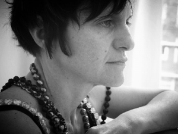

Body perceptions - Worksession w/Rose Akras in collaboration w/ACTS - 4 dager. VENTELISTE
- Kategori:
- Tverrfaglige kurs
Tverrfaglige kurs
Åpent for profesjonelle skuespillere og andre profesjonelle deltakere med spesifisert bakgrunn og erfaring. Se søknadsteksten for spesifikasjoner. Legg ved CV. - Dato:
- 13.11.2014 til 16.11.2014
- Start kl :
- 11:00
- Slutt kl :
- 16:00
- Pris:
- 400,-
- Adresse:
- Norsk Skuespillersenter, Welhavensgate 1, Oslo
 ACTS is an artist-run organization for research and practice in performance run by international performance artists, based in Oslo. They have been running worksessions and laboratories for several years. We are exciting to collaborate with ACTS, hosting the Rose Akras worksession!
{kind=link}
Read more about ACTS here.
About the worksession
The purpose of the worksession is to research different possibilities of bodily perceptions in creative processes; opening insights and reflections of how we perceive our movements, their patterns and dynamics in space and time.
The classes use and explore information about the physiological, anatomical and developmental aspects of the body through specific exercises and improvisation to support an embodied action in space.
Based on somatic movement topics such as: development of human movement, spatial orientation, special senses, tissues, skeletal system and reflexes will be used to prepare the body, mind and perception to investigate personal movement vocabulay and presence.
Experiencing different body layers and structures, investigating sensorial feedback and communication processes between the brain and the rest of the body. The work open up new possibilities for development of a personal vocabulary of movement and a richer spectrum of movement dynamics.
The classes consists of a movement exercises, theoretical approach, improvisation and directed reflection. Participants are invited to bring issues they would like to work in this worksession, which can range from qualities of movement, spatial orientation, presence and attention to purely physical or related to a job they are currently developing.
{kind=link}
About Rose Akras
Rose Akras (Brazil/Netherland) works as professional dancer in Brazil, USA and Europe for the past 25 years.
In Amsterdam she is teacher of Movement Reaserch at Amsterdam School of Dance, De Acteur School and Somatic Movement Institute. Organizer of "Manifestations Peformance" together with Dirk Jan Jager at Arti Gallery, and currently doing a Master degree in Voor Kunseducatie at the AHL.
With the program "Between Heaven and Earth", presented at the Museum Night in Oude Kerk, Akras won the award for best program of 2012. She has also worked in the exchange program at the MC Amsterdam Theatre and Theatre Company of Heliopolis.
In Brazil, Akras is a consultant of VERBO - international performance plattform - at Galeria Vermelho since 2007.
Rose Akras's performance research question: duration, presence, representation and space, while the philosophy of Henri Bergson has a strong reference in her work. Her actual perfromances are developed to challenge not only the relationship of space and time, yet the relations between movement and three-dimensional representation, looking for possible implementation of artistic languages?
Read more here:
www.basisforliveart.com
Pris for medlemmer av NSF: 350,-